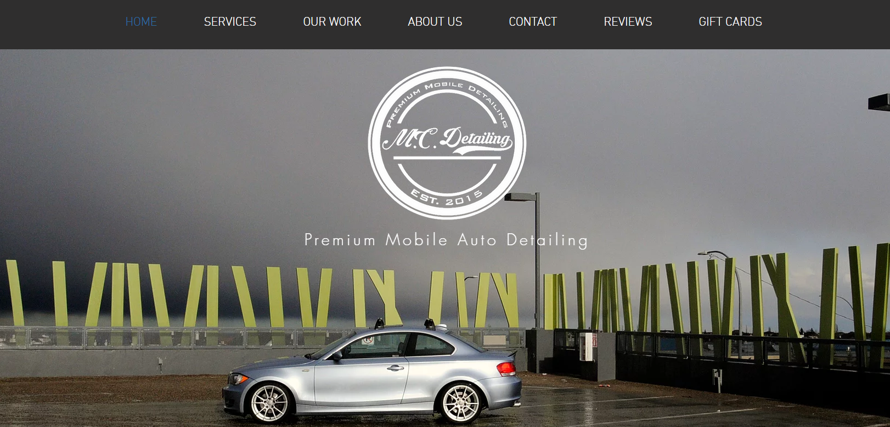

M.C. Detailing

My friend Christian and myself have successfully co-founded and operated a mobile auto detailing business, which has required us to be imaginative, creative, flexible, and detailed oriented. Since 2015, we have expanded our business to include large scale contract work, which requires us to be resourceful and efficient in finding solutions to any challenges that arise while keeping our detailing team focused on providing an unmatched customer experience. The table below shows the number of clients we serviced and the gross income for each summer of operation.
| Year |
Number of Clients |
Gross Income |
| 2015 |
53 |
$10,175.00 |
| 2016 |
37 |
$8,073.25 |
| 2017 |
49 |
$10,888.89 |
| 2018 |
31 |
$9,911.75 |
| 2019 |
13 |
$3087.73 |
| 2020 |
48 |
$10,792.74 |
View M.C. Detailing Website
Bike Trackr
I have recently started a new project with the goal of creating a low-cost GPS tracking system for my bike. I am using leaflet maps to display a marker and information on a webpage (example below), and an AWS windows environment server to receive GPS TCP/UDP data and store it in an SQL database. I can then pass this information to my webpage and update the location and information of the marker.